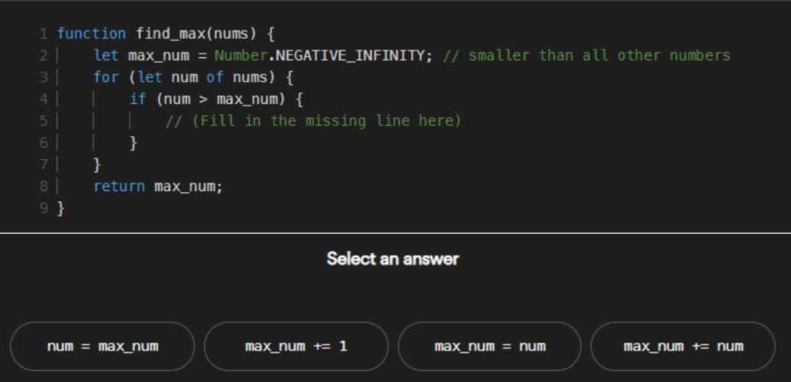

Desafíos
-
CONSIGNA:
Armar con los recursos que vimos y conoces de html, css y si te animas a incorporar lo que sepas de js, una web simple, con la presentación de cada uno.
Lo que no puede faltar:
- Imágenes
- Enlaces internos y externos
- Formatos de textos
- Estructuras comentadas (que hacen una buena práctica)
- Uno o varios componentes de bootstrap 5 (opcional)
- Animaciones que pueden ser con css o js
- Incorporación de clases y/o id para darle formato
- Todo lo que tu creatividad quiera!!
-
Elaborado con elementos del DOM
Ver soluciónElaborados con las interacciones: alert y prompt
Ver soluciónCONSIGNA:
Elaborar un sitio web simple que permita pedir por pantalla un radio (numérico) y muestre en la pantalla el resultado del área del círculo.
Recordá que:
- El área de una circunferencia es: π ∗ r2
- El valor que ingrese tiene que poder operarse, usa un método para transformar la cadena.
- Debe pedir el dato de radio por pantalla.
- Debe informar por medio de un alert() el resultado, concatenando la frase con la variable.
- Investigar como hacer para que salga impreso en el documento HTML la frase con el resultado.
- Investigar como hacer radio al cuadrado de diferentes formas.
- Recordá buscar la forma de indicar que el radio es positivo.
- Hacer un pedido de alguna variable por consola y tomar la captura.
Opcional:
Si todavía queres seguir desafiándote entonces intenta realizar el código necesario para que según el valor ingresado por pantalla valide y pida nuevamente el dato en caso de que:
- Sea un valor negativo, indicándole al usuario que el radio no es valido y que debe ser un valor positivo.
- Si el valor es mayor a 100, indicar que el rango supera la capacidad de calculo y debe elegir entre 0 y 100.
La validación debe ser interna, por lo cual es necesario armar una estructura, podes averiguar cómo armarla.
A su vez podrías repetir el mismo proceso para validar el área de un triangulo rectángulo, pidiendo los datos de base y altura.
Si es posible usa un contador para indicar cuantas veces se ejecutó.
-
CONSIGNA:
Dado la siguiente fracción de código, indicar lo que se pide a continuación:
Ítem 1:
- Averiguar que hace Number.NEGATIVE_INFINITY y cuáles son sus usos.
- ¿Qué hace y que función cumple dentro del proceso? ¿Qué otras propiedades se pueden usar similar a esta?
- ¿Qué realiza el For of?
- ¿Qué hace la función con los datos? ¿Dónde están almacenados los datos?
- ¿Qué resultado se obtiene? Realiza un esquema con valores.
Ítem 2:
Elaborar un programa en JS desde POO que pueda realizar este proceso y algún otro más usando esta propiedad como base. Puede contener más cosas.
-
CONSIGNA:
Elaborar un sitio web simple que permita pedir por pantalla un radio (numérico) y muestre en la pantalla el resultado del área del círculo.
La fábrica de vehículos Argenta S.A. quiere implementar un sistema que le permita fabricar los autos básicos que luego serán distribuidos a las marcas correspondientes para poder ser procesados como producto final.
Los vehículos deben tener cantidad de ruedas (no todos tienen 4 y auxilio), cantidad de puertas (incluyendo el baúl), tipo de carrocería (chica, mediana o grande), modelo (que se clasifica de acuerdo con las ruedas en moto, auto, camioneta), marca destino(Ford, Fiat, BW, Audi), costo de fabricación (costo base= 50000, varia el precio de acuerdo a la carrocería chica el doble del costo base más 5000 de patente, mediana costo base al cuadrado más 85000 de patente, grande 5 veces el valor de la mediana más 180000 de patente).
Todos los vehículos deben mostrar su información completa detallada, resaltando en negrita las propiedades y una debajo de la otra.
A su vez todos los vehículos deben cumplir con las métricas iniciales del test de prueba que consiste en:
- Encender el motor
- Apagar el motor
- Moverse
- Frenar
- Hacer cambio de velocidad de 0 a 50
- Comprobar luces que prendan y apaguen
- Tocar la bocina y que esta suene correctamente
De los vehículos que se fabrican la empresa tiene 1 modelo de alta gama que tienen como adicionales, techo corredizo, asientos de cuero reforzados y costo extra de patente de lujo de 70000 al valor de costo del vehículo grande, también debe pasar por las mismas pruebas e informar sus detalles. Si el auto cumple con el test de prueba deberá informar que está acondicionado, en caso de que no pase el test deberá indicar no apto. Este valor para el test lo determinará el inspector manualmente para ser asignados e informados en el detalle final.
Por ultimo la empresa quiere almacenar la información de los primeros 10 vehículos fabricados en el día, y mostrar la información de modelo, marca destino y tipo de carrocería. El cual debe incluir los 4 modelos fabricados.
Analizar bien las partes del problema, pensar las acciones consecuentes y unificar los criterios.
Si te animas crear un front para ejecutar el test de prueba de los vehículos.
AVERIGUAR: cual es el método que permitirá a futuro ingresar nuevos modelos de vehículo al final de la lista de los 10. Indicar como lo aplicarías.